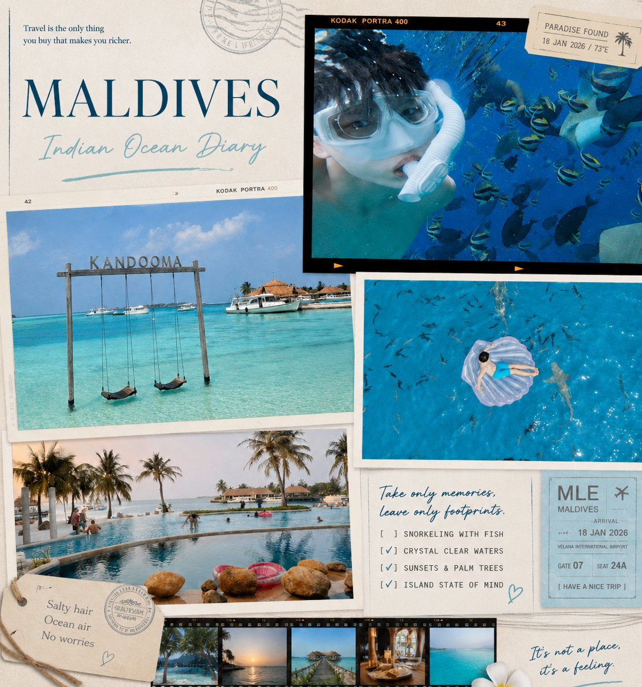

Y&Z Grow, Sales + Project Management + Web Deployment
Field sales and project coordination work across offline customer engagement, follow-up, and digital presence support.
East Lansing / New York / Remote
I connect supply chain thinking, sales execution, and e-commerce data into operational decisions. My work spans JD.com research, battery procurement analytics, Taobao growth operations, and 2025 sales plus PM work at Y&Z Grow.
Career map
A visual timeline for supply chain, operations, sales, e-commerce, and project work. Y&Z Grow is included as a 2025 experience and can be tightened when final metrics are confirmed.
Field sales and project coordination work across offline customer engagement, follow-up, and digital presence support.
Bachelor of Arts in Supply Chain Management. Major GPA 4.00, cumulative GPA 4.00, Dean's List for six semesters.
Researched North America fashion category opportunities and developed a data-driven campus recruitment strategy.
Improved procurement analysis and production monitoring, driving measurable delivery and efficiency gains.
Owned sourcing, logistics, trend analysis, advertising, customer service, and growth operations for an online toy store.
Case studies
Click each dossier to see the story: situation, action, result, and what it says about the way I work.
Life + lens
The travel posters are shown in full. The cyberpunk layer acts as an archive frame so the images keep their original scrapbook quality.
Indian Ocean diary / diving / Kandooma

Contact
Open to supply chain analyst, operations analyst, procurement analyst, logistics analyst, e-commerce operations, and business/data analyst roles.